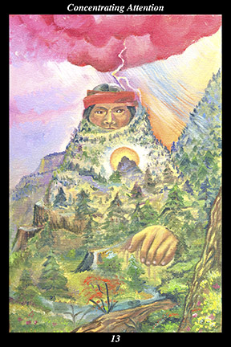

 | IMAGEAn ancient spirit, part man and part mountain, stands in the solitude of the wilderness. A storm gathers around his head and his hand rests on the ground out of which he rises. The creative energy of lightning strikes the crown of his head and the life-giving force of the sun perpetually rises behind a sacred mountain that is his heart. |
INTERPRETATION
This hexagram depicts a time in which to attain great independence of spirit by disciplining your powers of concentration. The mountain is a symbol of wholeness, independence, and the unchanging. The man is a symbol of the training and refining of human nature. Taken together, they mean that you focus your attention uninterruptedly upon the present moment. Lightning striking the head is symbolic of creative thought. Resting the hand on the fundamental is symbolic of concrete actions in accord with the underlying harmony of the world. Dawn within the heart of the mountain is symbolic of the eternal renewal of the infinite wilderness to be explored on the inner way. Taken together, these symbols mean that you fix your creative will upon actions that express the sacred nature of humanity’s relationship with nature and the divine: when the sun-heart radiates
benefit, then the willpower of lightning-thought is translated into the actions of the hand-earth.
ACTION
The masculine half of the spirit warrior unites the intent of human nature with the intent of the mountain in order to slow time down to the present moment. Attending to matters not at hand dilutes our power and disperses our energy. Concentrating on matters not in the present time or place accelerates our experience of time by disrupting our continuity of awareness. The faster things are going on around us, the greater our need to concentrate fully on the matter at hand. When our concentration cannot be broken by either external or internal distractions, then we move at the pace of creation, wherein a single moment is long enough to experience the true potential of joy and a single lifetime is long enough to accomplish our purpose. Practice ignoring the trivial. Shut out habit thoughts and feelings and memories that have nothing to do with the moment at hand. Bear down on the single matter before you, with nothing else on your mind, and you will find that all the work you have been doing to refine your nature comes to the fore, expanding the moment into an unbroken landscape of sustained clarity and ample opportunities. Because you focus all your energy on opening up the potential locked within the moment, your accomplishments surpass your highest hopes.
INTENT
The time is ripe for advance. You can make great progress in your endeavor now if you don’t dilute or waste your energy on needless and unjustifiable activities. Your capacity for pure and focused intent is great: there is nowhere but the present moment to be, there is nothing but the present action to do. The mountain waits, the storm comes: when your mind is calm and quiet and not preoccupied, then the energy to motivate and direct your efforts will have a place to dwell. Concentrate only on what you have decided to do—and do only those things that actively contribute to achieving your goal. Avoid planning your responses to what may occur. Instead, wait to see what unfolds and trust that your accumulated experience has prepared you to respond with great spontaneity and effectiveness. Resist making wasteful changes. Instead, conserve your energy by restricting your efforts to making just those changes that ennoble your motives and take you closer to completing what you have started.
SUMMARY
You must pay especial attention now, concentrating on your endeavor without getting distracted by either inner or outer developments. Train your mind to interrupt your ordinary way of following every thought, emotion, and memory that captures your attention—if you continually bring your attention back to settle on the matter at hand, you will succeed in accomplishing your goals. Concentrate with your heart and your thinking will follow.
THE LINE CHANGES
1° It is all well and good to set goals and make plans—if you can set them aside and live your life. It is all well and good to review your past and understand your history—if you can come back to your senses and live your life. You are where your concentration is—train it upon living your life.
2° You would like to communicate with a superior but are held in check by gatekeepers. Not trickery, flattery, nor high-handed behavior will work. Instead of trying to bypass such people, convince them of the significance of your information—relationships work where scheming does not.
3° What greater pleasure than to see wrong-doers corrected and the corrupted ousted. But fighting such battles makes it difficult to concentrate on your own affairs. Maintain the highest ethics and indulge no appearance of impropriety or the hunter will become the hunted.
4° Changes are coming quickly and sometimes startlingly—do not take them personally. Turn this into a battle of principle and you will lose—pretend to go along with the changes and they will fade away. Concentrate on being grateful for the position you have and you will outlast this phase.
5° Success is not only elusive—it is often difficult to recognize even when achieved. Go back and revisit your original goal and you will see you have exceeded your hopes. Those things not yet achieved were taken on later in the midst of the fray—celebrate victory before reentering the battle.
6° Concentrating on unrealistic goals becomes obsession—stop before idealism and principles create a negative backlash. Walk away from your daily concerns for a while and go visit new places you have wondered about. Concentrate on the daily concerns of new lands.